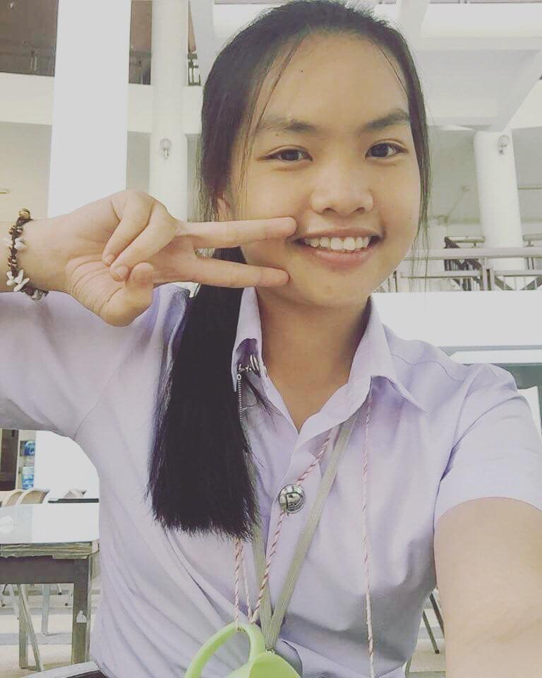
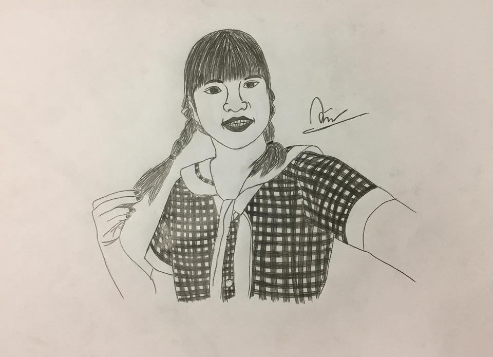
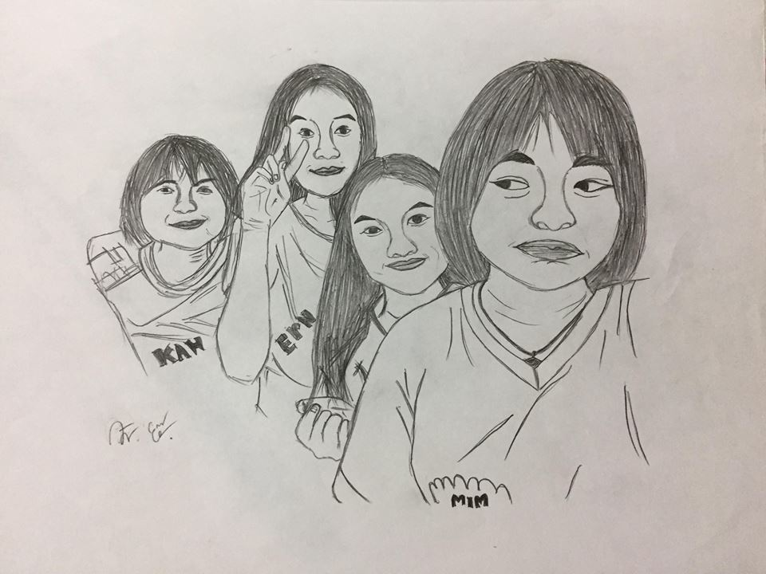
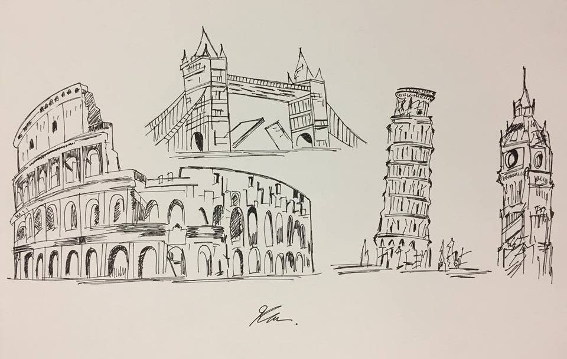

ดิฉันชื่อนางสาวกวินทรา ยะป๊อก (หนูวิว)
การศึกษาปัจจุบันเรียนอยู่สาขาวิทยาการคอมพิวเตอร์
นิสัยส่วนตัวคือ
เป็นคนกวนๆ อารมณ์ดีเวลาว่างชอบวาดรูป เล่นกีฬา
ข้อเสียโดยย่อของหนูวิวคือเป็นคนหัวดื้อ
ขี้น้อยใจพูดจาไม่
ค่อยสุภาพค่ะ
หนูวิวจบมัธยมมาจากโรงเรียนนาหมื่นพิทยาคม อำเภอนาหมื่น จังหวัดน่าน
ประสบการณ์ด้านวิชาการ
ตอนมัธยมเคยแข่งขันภาษาจีน ภาษาอังกฤษ ภาษาไทยและ
ภูมิลำเนาของหนูอยู่ที่
หมู่บ้านนาทะนุง ตำบลนาทะนุง
อำเภอนาหมื่น จังหวัดน่าน
พูดถึงชื่อเล่นของวิวกันหน่อย จริงๆแล้วชื่อเล่นของหนู
คือก๋าลาวิวแต่หนูคิดว่ายาวไปเวลา
เพื่อนเรียก555+ กลัวเสียเวลาอิอิเลยตัดเหลือแค่วิว แต่หนูวิวนี่แค่ขำๆนะคะ
อาหารที่ชอบอะไรก็ได้ที่กินง่ายๆไม่ยุ่งยาก
วันเกิด 18 สิงหาคม 2000 อายุ 18 ปี
กีฬาที่ชอบเล่นก็จะเป็นแบตมินตัน และขอฝากผลงานยามว่างซักเล็กน้อยนะคะ
ภาพวาดของฉันเอง
  